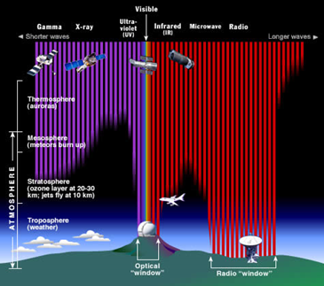
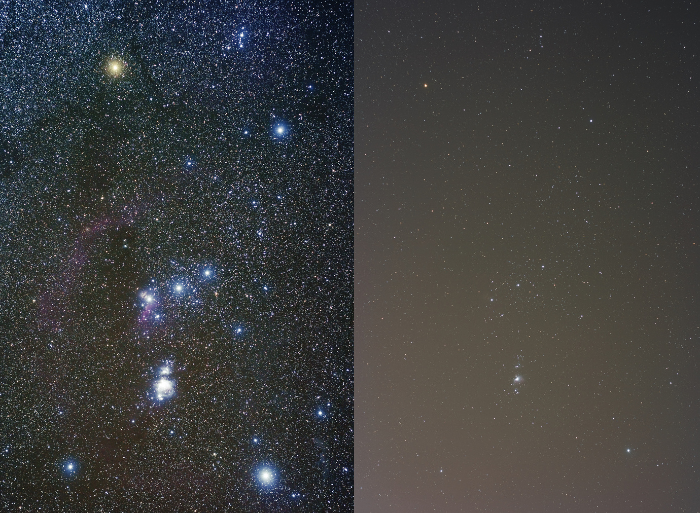

Ground Observations
Pros and cons of observing from the ground.
| Pros | Cons |
|---|---|
| Things break all the time, if your telescope is in space this can be a big problem. It’s easier (and much cheaper) to fix or improve your telescope if it’s on the ground. | The Earth’s atmosphere blocks light at certain wavelengths. This limits ground-based telescopes to observing in visible light (400-700 nm) or radio (1mm +) clearly, though some others like infra-red are partially visible.
 |
| On the ground observers can also control the telescope in real time and change their plans at the last minute if they find something exciting that needs observing quickly. In space, once instructions are sent to the telescope they’re fixed. | Clouds can block the visible light (but not radio emission) from stars. Wind and other atmospheric effects can also affect the quality of your observation. Just like when you look at the stars in the night sky you see them twinkle, this can be a problem for ground-based telescopes as the star appears to ‘jiggle’ around as the light is reflected and refracted by the atmosphere. |
| Ground based observatories can only observe in visible light during the night, where space telescopes can observe around the clock. The length of nights can vary depending on your location around the world. At the poles at some times in the year, nights can last for months at a time! Long observations might be better suited for space telescopes or observatories near the poles. | |
| Light pollution can also be an issue in areas near large towns or cities. If you’ve ever looked at the night sky when in a city you might not see many stars (or any at all), compared to in the countryside where you can see millions! Humanity tends to make a lot of radio noise too, so radio observations are less noisy further from cities and towns.  |